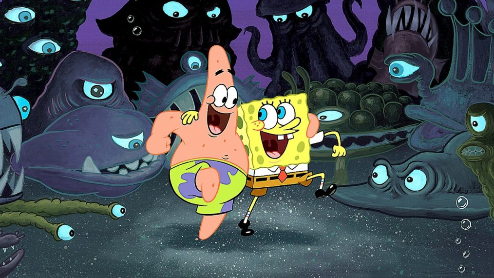

About Spongebob SquarePants
Spongebob is an extremely talented underwater sea sponge. He lives in a pineapple under the sea, at a town called Bikini Bottom. He also have a job at the most famous diner on town called Krusty Krabs owned by Mr. Eugene Krabs.
Spongebob and his bestfriend.
SpongeBob's Quirks
- He's annoyingly optimistic
- He has a big imagination
- He's a workaholic
- He's extremely friendly
- He loves his pet snail named Gary
Spongebob's Friends
Spongebob has a lot of awesome friends and frenemies. Click the links below to read more about them: